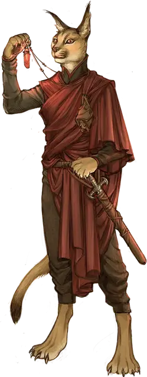

Оккультист послушник
Occult Initiate
Маленький или Средний Гуманоид (Чародей), любое мировоззрение

Класс Доспеха 12 (15 с доспехом мага)
Хиты 66 (12к8 + 12)
Скорость 30 футов
| мод | спас | ||
|---|---|---|---|
| СИЛ | 10 | +0 | +0 |
| ЛОВ | 14 | +2 | +2 |
| ТЕЛ | 12 | +1 | +1 |
| мод | спас | ||
|---|---|---|---|
| ИНТ | 14 | +2 | +2 |
| МДР | 10 | +0 | +0 |
| ХАР | 16 | +3 | +3 |
Навыки Восприятие +2, История +4, Магия +6, Обман +5
Чувства пассивное Восприятие 12
Языки Общий
Опасность 2 (450 опыта)
Бонус мастерства +2
Особенности
Языки. Знает Общий и ещё один язык.
Действия
Короткий меч. . Рукопашная атака оружием: +4 к попаданию, досягаемость 5 футов, одна цель. Попадание: 5 (1к6 + 2) колющего урона плюс 7 (2к6) урона психической энергией.
Магический заряд (Перезарядка 5–6). Послушник создает взрыв магической силы в сфере радиусом 20 футов с центром в точке, которую он может видеть в пределах 120 футов. Каждое существо в этой области должно совершить спасбросок Ловкости Сл 13. При провале существо получает 10 (3к6) урона силовым полем и отбрасывается на 10 футов от центра зоны. При успехе он получает половину этого урона и не отбрасывается.
Использование заклинаний. Послушник может накладывать следующие заклинания, используя Харизму в качестве базовой характеристики (Сл спасброска от заклинания 13):
• Неограниченно: свет [light], волшебная рука [mage hand];
• 1/день каждое: обнаружение магии [detect magic], левитация [levitate].
Описание
Оккультисты послушники - это самые новые члены своей организации и члены организации, с которыми чаще всего сталкиваются посторонние.
Оккультисты алой мечты
Консорциум Алой мечты рассматривается как эзотерическая, ориентированная на прибыль, но в конечном счете безвредная группа охотников за привидениями и продолжателей городских легенд. Это мнение не является неточным, но руководство общества одержимо одним видом легенд, в частности: теми, которые связаны с Луной Дурных Предзнаменований, Руидусом и древними фигурами, проклятыми воздействием ее инопланетного влияния.
Самые жестокие желания и пристрастия самых одержимых агентов общества усилились при контакте с предметами, зараженными руидием.